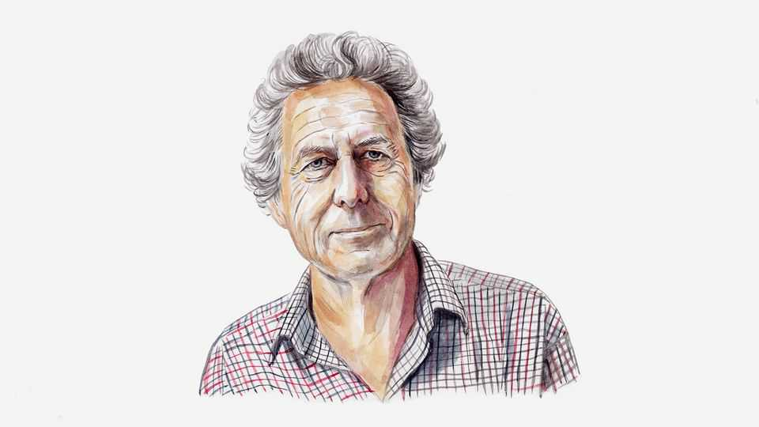

The world may have less time than it thinks on climate change
If it is affecting circulation patterns that determine how and where anticyclones form, it could accelerate alarmingly, warns Tim Palmer

Sep 3rd 2026
THE WEATHER this summer in southern England, where I live, has been brutal: exceptional heatwaves and record-breaking spells without rain. Tracks have buckled, disrupting transportation, and crop yields are down substantially, with farmers warning of food shortages next year.
Some experts tell us that this is merely what we can expect based on long-standing climate-change predictions of “hotter drier summers”. But such predictions do not explain what we experienced this summer and it is important—and urgent—to understand why not, at least if we are to be prepared for next summer and those immediately after.
The perhaps familiar predictions of “warmer wetter winters, hotter drier summers” describe what is called the “thermodynamic” aspect of climate change: the generic consequence of the fact that global surface temperatures are warming from greenhouse-gas emissions, and that a warmer atmosphere necessarily contains more water vapour. With more humid air, the standard low-pressure systems that bring rain to the British Isles in winter will bring even more rain under climate change. In summer, by contrast, where such low-pressure systems are suppressed by the reduced equator-to-pole temperature gradient (a consequence of the Sun moving northward), the warmer air will dry the land, reducing rainfall further. We understand this thermodynamic signal extremely well—not least because the underlying physics is simple.
But none of this is directly relevant to what has happened this summer. The proximate cause of the drought was a persistent high-pressure system—an anticyclone—sitting over much of Western Europe from late spring onwards. This anticyclone steered rain-bearing weather away from Europe. To understand why it was so dry and hot this summer, we must first understand the causes for this exceptionally persistent anticyclone.
There are, broadly, two possibilities. The first is that it is part of the internal chaotic variability of climate, and nothing directly to do with climate change. If this is so, then the likelihood of a similarly persistent anticyclone in 2027 is rather small. That is, we can expect more “normal” types of circulation patterns to occur next summer. The thermodynamic element of climate change will still leave its mark even if more normal types of circulation return. The summer of 2027 can be expected to be warmer and drier compared with 20th-century summers. But we should not expect the extreme drought and persistent heat that we experienced this year.
The second, much more disturbing possibility is that the persistent anticyclone has itself been made more likely by climate change. If this is the case, then climate change is not only affecting the thermodynamics of the atmosphere but is also changing its “dynamics”. This is a crucial distinction. To understand climate change at the regional level, it is not enough to think of climate merely as some giant steam engine, warming and humidifying as we shovel in more fossil carbon; we also need to track and predict the forces and movements of the individual parts—the cogs and gears—which make up the climate system, notably the atmosphere and oceans.
In this second scenario, climate change is affecting the circulation patterns themselves, including the jet streams which determine how and where anticyclones form. There is observational evidence that persistent anticyclones are indeed becoming more frequent in summer and are thus correlated with the rise in global temperatures. Producing model data that support these observations is challenging: unlike the thermodynamic aspect, the dynamics of climate change are exceptionally complex and highly non-linear, and can only be addressed quantitatively using the most advanced climate models.
Taking these ideas to the extreme, it is possible that we may shortly pass a kind of tipping point where the dynamical effects of climate change have become so strong that persistent anticyclones will soon become overwhelmingly likely each and every summer. If this is the scenario we now face, we do not have the luxury of adapting to the new climate normal in the coming decade or two. We must somehow adapt immediately.
Some climate modellers will think I am being alarmist. After all, the most comprehensive global climate models do not support a prediction where persistent anticyclones become a feature of every summer. However, we also know that these same models struggle to simulate the type of persistent anticyclone observed this year, probably because they lack sufficient spatial and temporal resolution to represent the turbulent interactions between different scales in the atmosphere. These so-called scale interactions are known to be important in maintaining anticyclones over long periods of time, like the Great Red Spot on Jupiter. The failure to simulate this potential tipping point in current models is not a reason to be complacent but a reason to urgently improve our models.
There is an additional wrinkle to this story: El Niño is on the way. In Britain, we can expect this transient warming of the tropical Pacific ocean to have its biggest effect in winter, with the coming one wetter than normal at first, but perhaps drier than normal later. However, there is much variation in European weather from one El Niño event to another. If this one brings below-average rainfall this winter, reservoirs won’t get topped up before next summer, with potentially very serious consequences.
What to do? I have argued for many years that national climate centres around the world should pool human and computing resources to enable ultra-high-resolution global models to be built. I can hardly think of a more important and urgent issue than knowing whether we are passing major climate tipping points. If humanity works together, this issue can be resolved quickly.
But what about practical policy measures? What emergency measures could Britain introduce now to help mitigate a drought like 2026, were it to occur in 2027 (and if the intervening winter is not as wet as we would like)? Does the country need desalination plants, for example? At the least, government agencies need to think about this, urgently and collectively. There is no time to lose. ■
Tim Palmer is Royal Society Research Professor Emeritus at the Department of Physics, University of Oxford.